Manual do Sistema
Caixa JS Gráfica
Passo a passo real do PDV e do Admin — com as telas do sistema em produção, do jeito que você vai ver na tela todo dia.
01 Como entrar no sistema Todos
Zu e Gabi — PDV
Abra pdv.jsgrafica.site e toque no seu nome. Não precisa de senha.
Abertura de caixa — na primeira vez que você entra no dia, o sistema pede pra contar o dinheiro e as moedas físicas do seu caixa antes de liberar qualquer tela.
Preencha "Dinheiro R$" e "Moedas R$" e toque em Registrar abertura e entrar.
Edvam — Admin
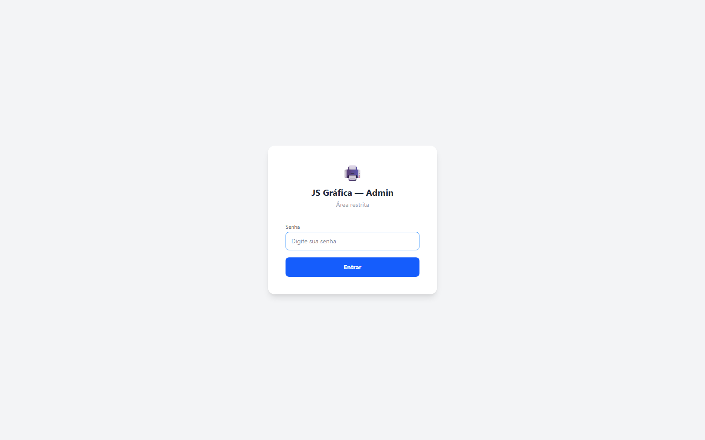
Navegação
O menu tem 2 fileiras: primeiro o grupo (💬 Atendimento, 📋 Vendas, 💰 Financeiro, ⚙️ Configurações), depois a aba dentro dele. Zu e Gabi só veem os grupos/abas do dia a dia — as telas administrativas só aparecem pro Admin.
02 Vender no balcão Todos
Aba 🧾 Pedidos Balcão, dentro do grupo 📋 Vendas — a tela do dia a dia no caixa.
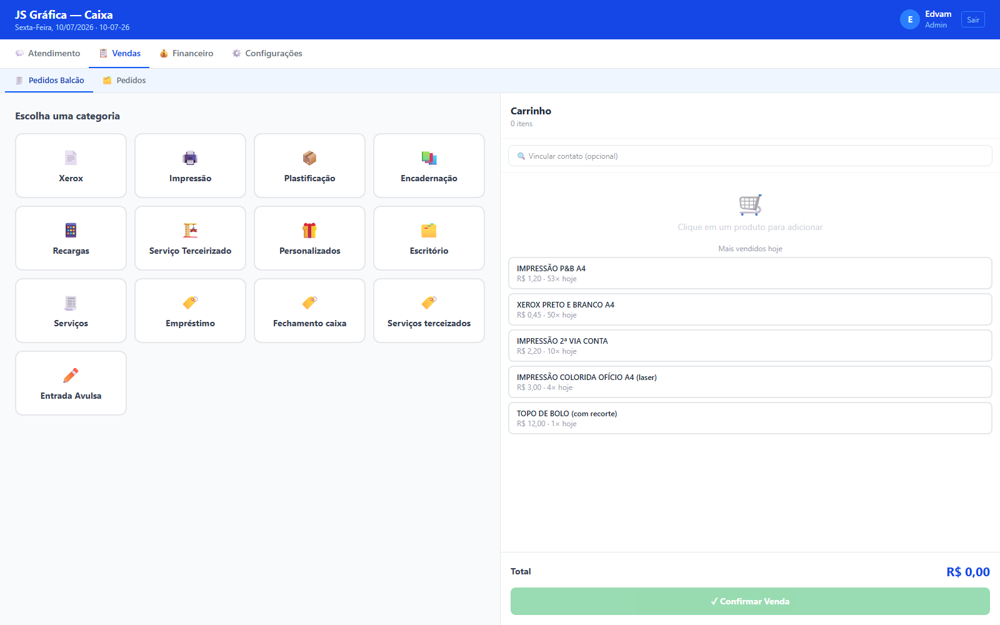
Toque na categoria do produto (xerox, impressão, plastificação, recarga...). Os chips no topo trocam de categoria sem precisar voltar.
Toque no produto → escolha a quantidade → Adicionar. Serviço fora da tabela? Use Entrada Avulsa: descreva e informe o valor combinado.
Quer desconto num item? 🏷️ Aplicar desconto na linha dele — R$ ou %, motivo opcional.
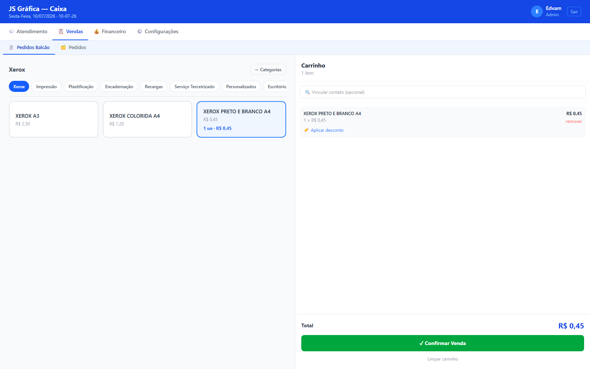
Toque em ✓ Confirmar Venda. Abre o modal "Finalizar venda": escolha a forma de pagamento e se já entregou agora.
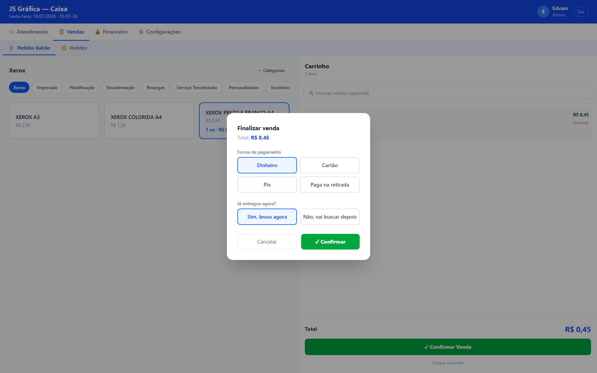
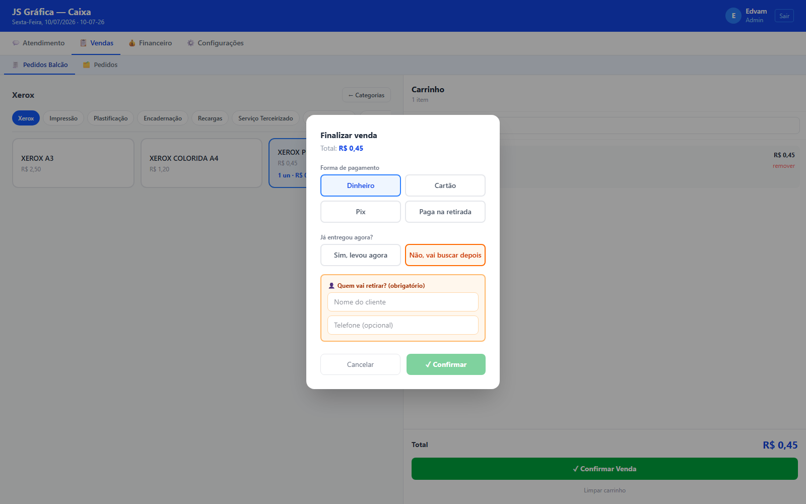
Retira depois: desde 10/07/2026, o pedido entra na esteira de produção (seção 3) — precisa avançar manualmente na aba Pedidos até chegar em "Aguardando retirada" e depois "Entregue".
Se a forma foi Pix, abre um popup com QR Code + código copia-e-cola — confirma sozinho quando cair (ou toque em ✓ Confirmar pagamento se for Pix da RecargaPay, que não confirma sozinho). Cancelar venda no popup desfaz tudo se o cliente desistir.
03 Acompanhar pedidos Todos
Aba 🗂️ Pedidos (grupo 📋 Vendas) — todo pedido aparece aqui, vindo do balcão ou do WhatsApp, com o mesmo fluxo de status.
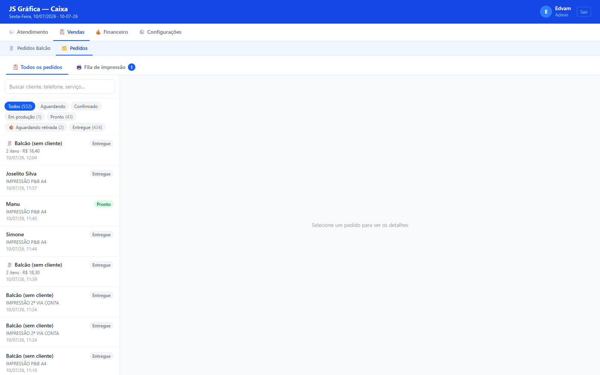
Como avançar um pedido
| De | Botão | Vai para |
|---|---|---|
| Aguardando | Confirmar pedido | Confirmado |
| Confirmado | Iniciar produção | Em produção |
| Em produção | Marcar como pronto | Pronto |
| Pronto | ✓ Entregue (levou agora) | Entregue |
| Pronto | 📦 Aguardando retirada | Aguardando retirada |
| Aguardando retirada | Marcar entregue | Entregue |
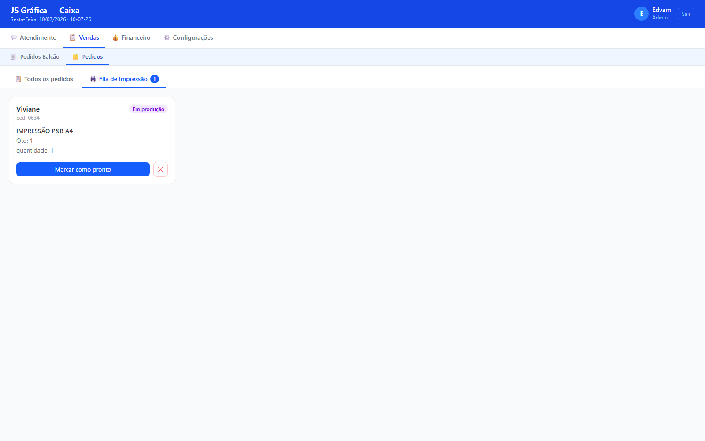
04 Fechar caixa Todos
Aba 🔒 Fechar Caixa (grupo 💰 Financeiro). Zu e Gabi fecham a própria gaveta; o Admin vê o fechamento geral com as 4 contas.
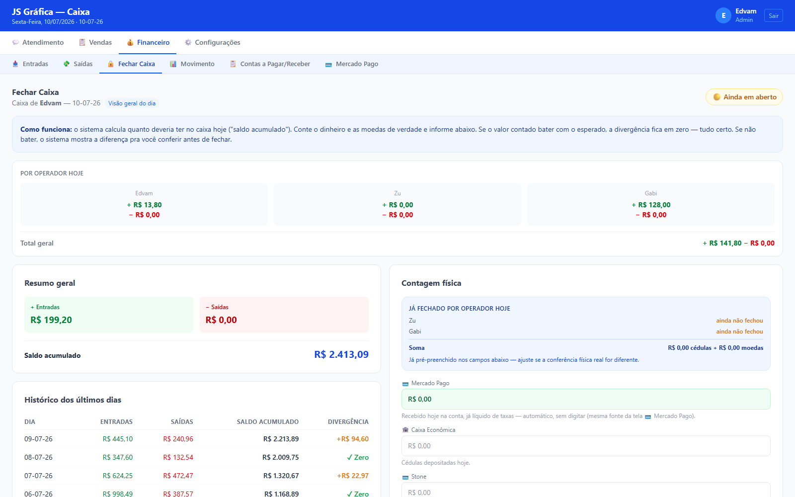
Conte o dinheiro em cédulas e as moedas do seu caixa físico e preencha nos campos.
Compare com o Total esperado calculado pelo sistema — bateu, fica verde; se não, mostra a diferença.
Toque em 🔒 Fechar Caixa. Depois de fechado não dá pra editar — algo errado, avise o Edvam.
Fechamento geral Admin
Além da contagem física, o Admin confere as 4 contas: 💳 Mercado Pago (automática), 🏦 Caixa Econômica, 💳 Stone e 📱 RecargaPay (manuais). O sistema já pré-preenche o dinheiro/moedas que Zu e Gabi fecharam nas próprias gavetas.
🔍 Diagnóstico do fechamento Admin

- Escolha o dia e toque em ✨ Gerar resumo do dia — texto em português explica o que bateu e o que não bateu, sem inventar causa quando os dados não sustentam.
- Abaixo, lista de sinais automáticos (🔴 crítico, 🟡 atenção, ℹ️ info) apontando o pedido/saída exato envolvido.
- ✎ Editar ajusta o texto manualmente; ↻ Gerar de novo gera outro sem perder a edição.
05 Inbox — WhatsApp Admin
Central de conversas do WhatsApp — 3 colunas: lista de conversas, a conversa aberta, e o painel do contato/pedido.
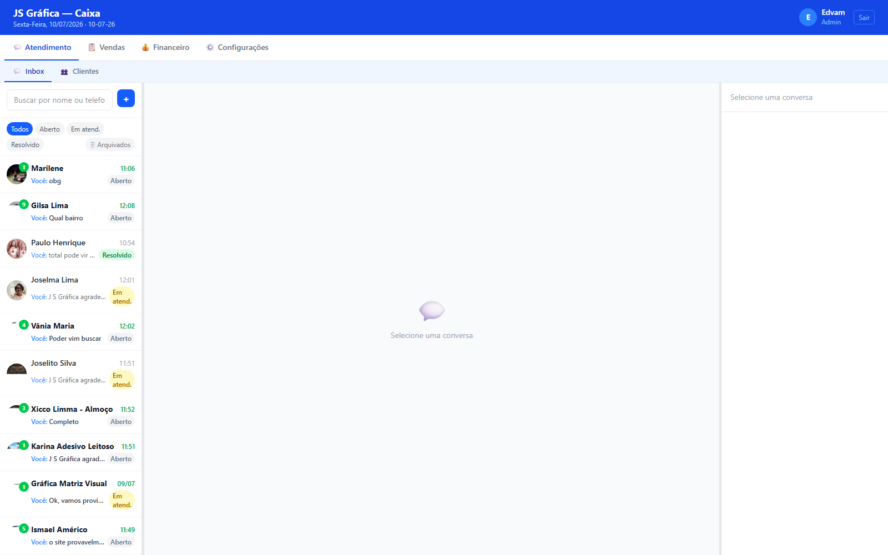
Conversas
- Filtrar por Todos / Aberto / Em atend. / Resolvido.
- Abrir uma conversa "Aberta" já assume ela automaticamente pro seu nome.
- Resolver ✓ ao terminar, Reabrir se precisar voltar, 🗄 Arquivar pra tirar da lista.
Responder
Digite e toque em ➤ pra enviar. ✨ IA sugere uma resposta — nunca envia sozinho, sempre revise antes.
Criar pedido pela conversa
No painel direito, 📦 Criar pedido.
Categoria → produto → quantidade (ou valor combinado, se sob consulta) → + Adicionar ao pedido. Repita pra mais itens.
Confirmar pedido (N itens) — modal com Tipo de entrega e Forma de pagamento, ambos opcionais.
✓ Confirmar. O pedido entra na esteira (seção 3). Pix real? O mesmo popup de QR do balcão abre na hora.
06 Clientes Admin
Cadastro e histórico de todo contato que já falou com a gráfica pelo WhatsApp.
- Busca por nome ou telefone; ordena por Último contato ou A-Z; alterna lista/grade.
- No detalhe: editar nome, aniversário e endereço.
- Histórico completo de pedidos e status de atendimento.
- 💬 Abrir conversa no Inbox leva direto pra conversa dele.
07 Financeiro Admin
📥 Entradas
Ledger só-leitura de tudo que entrou no caixa no dia — venda balcão, pedido pago, abertura e fechamento de caixa. Filtra por data, operador e tipo; não lança nada.
💸 Saídas
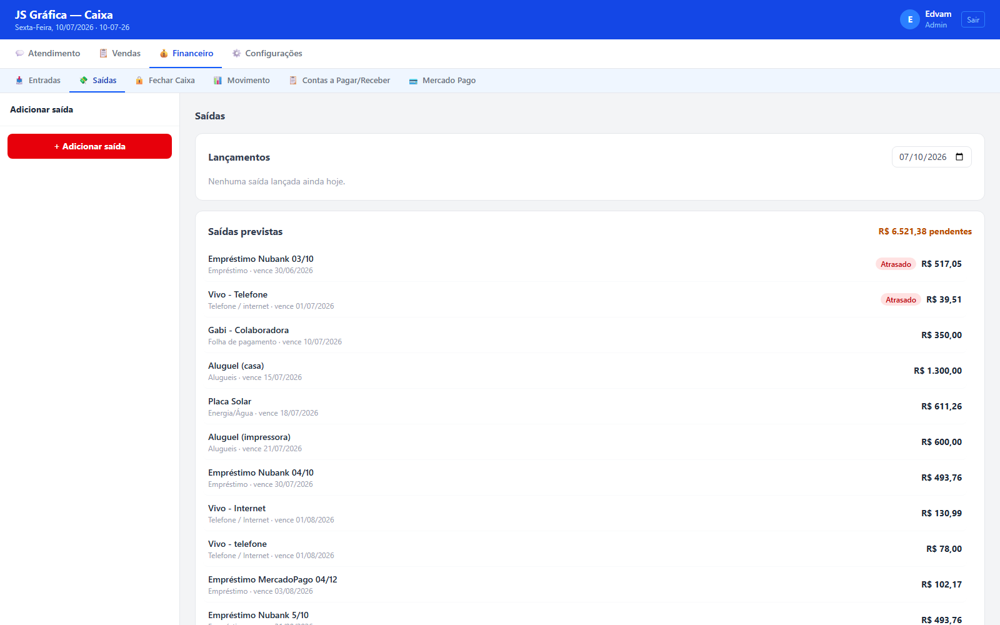
+ Adicionar saída → escolha a categoria → preencha → Lançar.
Recarga VEM tem cálculo automático: informe quantidade e valor da carga, o sistema já desconta a taxa fixa.
📋 Contas a Pagar/Receber
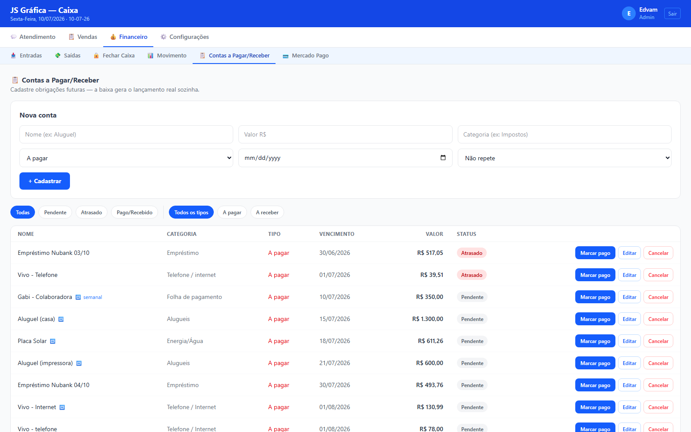
Cadastre nome, valor, categoria, tipo, vencimento e recorrência. Na hora de pagar, Marcar pago já lança em Saídas/Entradas sozinho.
📊 Movimento
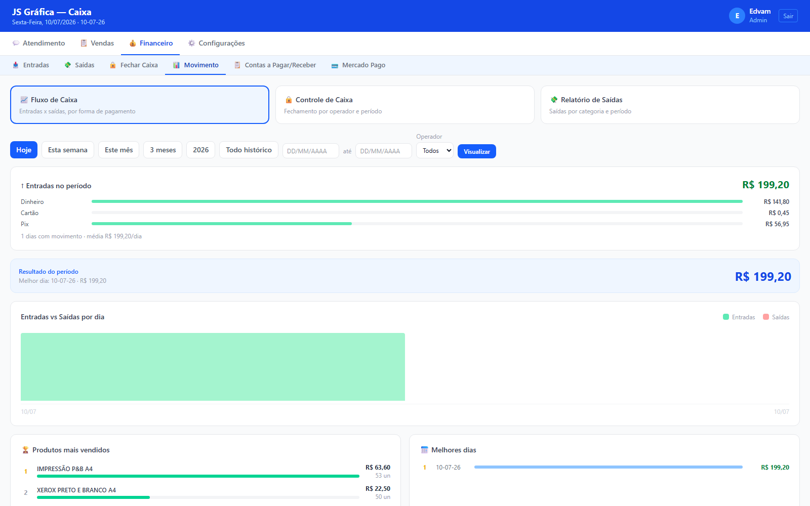
- 📈 Fluxo de Caixa — entradas x saídas, produtos mais vendidos, melhores dias.
- 🔒 Controle de Caixa — histórico de fechamentos por operador e período.
- 💸 Relatório de Saídas — saídas por categoria.
08 Mercado Pago Admin
Consulta (só leitura) do saldo real da conta Mercado Pago — bruto, líquido após taxas, e movimentações do período.
09 Produtos Admin
Cadastro de tudo que é vendido — nome, preço, categoria, descrição e, se quiser, controle de estoque.
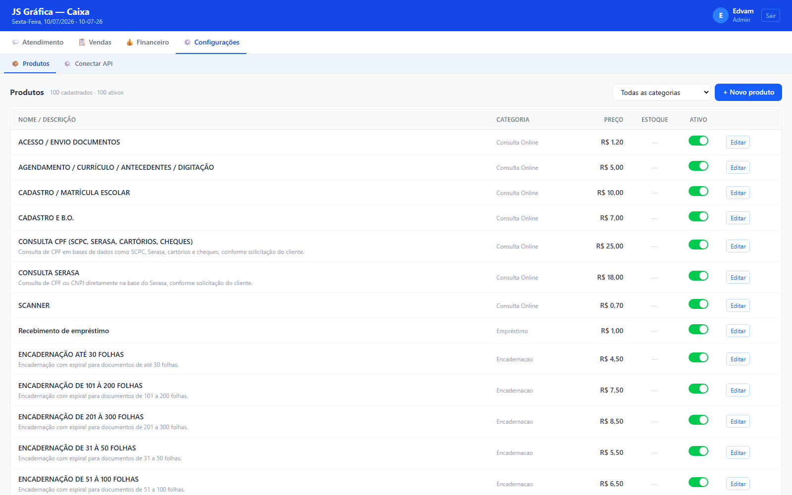
+ Novo produto pra cadastrar, Editar em cada linha pra ajustar. Desativar não apaga — só some da tela de venda.
10 Conectar WhatsApp Admin
Gerencia a conexão do número da gráfica com o Inbox.
Indicador verde "Conectado" / vermelho "Desconectado" no topo. Desconectou? Gerar QR Code e escaneie: WhatsApp → Dispositivos conectados → Conectar dispositivo.
11 Perguntas frequentes
Vendi errado, e agora?
Cancele na aba Pedidos: abra o item e toque em Cancelar (ou Cancelar venda se ainda estiver no popup de Pix). Desfaz qualquer saída automática vinculada — não mexa em Saídas na mão.
O cliente disse que já pagou o Pix, mas o sistema não confirmou.
Confira se caiu de verdade na conta antes de forçar. Se caiu e não confirmou sozinho, avance manualmente — abre "Pagamento pendente", escolha Pix e confirme.
Marquei "retira depois" e o pedido não aparece pronto pra buscar.
É esperado — desde 10/07/2026 "retira depois" passa pela esteira (seção 3). Avance manualmente na aba Pedidos até "Aguardando retirada".
O caixa não bateu no fechamento.
Não trave nisso — feche mesmo com a diferença, o sistema registra a divergência. O Admin investiga depois pelo "🔍 Diagnóstico do fechamento".
O QR Code do Pix não abre / trava.
Cheque a conexão. Persistindo, use "Paga na retirada" ou confirme manualmente Dinheiro/Cartão pra não travar o cliente — ajuste depois com o Admin.
Esqueci de fazer a abertura de caixa hoje.
O sistema não deixa passar — é sempre a primeira tela do dia. Conte o caixa físico e registre, mesmo que já tenha vendido algo antes de perceber (avise o Admin).